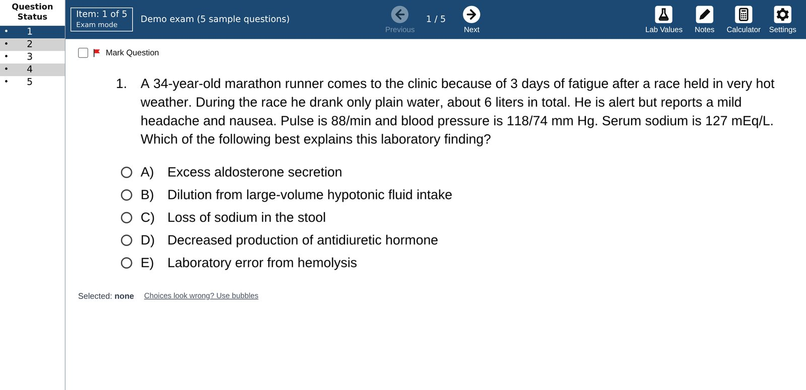

A lot of med school is doing the same things over and over: questions, flashcards, looking up terms. When something in my routine bugged me enough, I tried to code a fix. These are the ones that worked well enough to share. They're free, and the code is on GitHub if you want to use or change it.
The Tools
4 free, open-source tools
No tools match that.

Featured · Live now
Web appFree · no accountTypeScript · React
Test Simulator
Board-style practice exams from your own PDFs
I wanted to practice with my own question PDFs on something that felt like the real test, so I made this. You load a PDF and its answer key, and you get a board-style screen with timed blocks, a question list, highlighting, strike-outs, lab values, and a calculator. Every attempt is saved, so weeks later you can go back and redo just the ones you missed. It runs in your browser, nothing gets uploaded, and it works offline.
Exam, Tutor, and Untimed modes, including shelf-style 4-block presets
Highlight, strike out, mark, and take notes, just like test day
Built-in Lab Values and Calculator
Library with subject folders, score bars, and whole-folder import
Redo only missed or marked questions, weeks later
Installs as an app, works offline, private by design
How to use it
Open Test Simulator in Chrome or Edge (Safari and iPad work too) and try the 5-question demo.
Optionally pick a data folder in iCloud, OneDrive, or Google Drive so your history follows you.
Go to Library → Import a PDF exam, add the questions and the answer key, and check the key.
Start a block, then review your results and redo the ones you missed.
A 42-year-old woman has episodic headaches, palpitations, and sweating. Urine metanephrines are elevated, suggesting a pheochromocytoma.
Pheochromocytoma DiseaseA catecholamine-secreting tumor of the adrenal medulla that causes episodes of high blood pressure, headache, and sweating.MEN 2Adrenal incidentalomaTakotsuboBuilt-in dictionary · offline
Anki add-onOn AnkiWeb · freeBuilt with a classmatePython
AnkiMedRef
Hover any medical word on a card for a quick reference
Built with my classmate Agboade Sobowale. We worked on it together, mostly growing the medical database and tweaking it so lookups are quick enough not to slow down your reviews.
When you hit a word you don't know during Anki reviews, you usually have to stop and Google it. With AnkiMedRef, medical terms on your card get a faint underline, and hovering over one pops up a short reference card. For a drug, that's the mechanism, uses, side effects, and a high-yield pearl. Most lookups come from built-in dictionaries plus a 1.2-million-term database saved on your computer, so they're instant and work offline. If a term isn't there, it checks RxNorm, the FDA, MedlinePlus, and Wikipedia.
1,000+ built-in entries, including 222 drugs and 95 drug classes
Labs, clinical scores, ECG, micro, genetics, radiology, and signs
Shelf coverage for IM, peds, psych, neuro, family med, and OB/GYN
Deck-aware: on an OB/GYN deck, "hypertension" opens the pregnancy card
Hover an acronym like MMAPP to see the mnemonic it spells
Hold Cmd/Ctrl to freeze a tooltip, and click related terms to keep going
Real tooltips while reviewing: hovering "angina" and "syncope." Tap a screenshot to see it full size.
How to install
In Anki, go to Tools → Add-ons → Get Add-ons…, paste the code 122836299, and click OK.
Restart Anki, start reviewing, and hover any underlined medical term.
Change the hover delay, tooltip look, and lookup sources under Tools → Medical Quick Reference Settings. No API keys needed.
Optional, for the full 1.2-million-term offline database: download med_terms.db.gz from the GitHub repo and unzip it to get med_terms.db (about 458 MB; on Windows, use 7-Zip). Then go to Tools → Add-ons, select AnkiMedRef, click View Files, drop med_terms.db into that folder, and restart Anki.
Study flashcards hands-free, using only head movements
I made this for students with disabilities or mobility issues, so they can still do their flashcards without using their hands to control the computer. It uses a regular webcam to watch your head and face. Turn your head to answer a card, tilt it to scroll, and open your mouth to undo. You don't need any special equipment, and it works just as well if your hands are simply busy.
Works with any webcam; no special equipment
One-tap calibration to your natural resting position
Smoothing and per-action cooldowns to prevent accidental presses
Adjustable sensitivity and adaptive, smooth scrolling
On-screen guide showing what it's tracking
How to use it
Install Python, then pip install opencv-python mediapipe pyautogui.
Run python anki_face_control.py, open Anki, and start reviewing.
Sit comfortably and press c to calibrate, then use head movements to study.
A 58-year-old man comes to the emergency department with crushing chest pain…
→ Opens the 6 matching cards in your Anki deck
Chrome extensionFreeJavaScript
UWorld2Anki
Jump from a UWorld question straight to the Anki cards that cover it
When I miss a UWorld question, I want to pull up the Anki cards for it right away. This Chrome extension adds an "Open in Anki" button next to the question ID, with a count of how many matching cards you have. Click it and those cards open in Anki's browser, using the AnKing deck's UWorld tags. No more copying question IDs and searching by hand.
"Open in Anki" button next to every question ID
Shows the number of matching cards before you click
Works with AnKing UWorld tags for Step 1, 2, or 3
Pre-loads the next and previous questions for speed
Retries automatically if Anki isn't open yet
How to install
Install the AnkiConnect add-on in Anki (code 2055492159) and allow UWorld in its settings.
Download the repository, open chrome://extensions, turn on Developer mode, and choose Load unpacked.
Pick your Step in the extension's settings, open a UWorld question, and click Open in Anki.